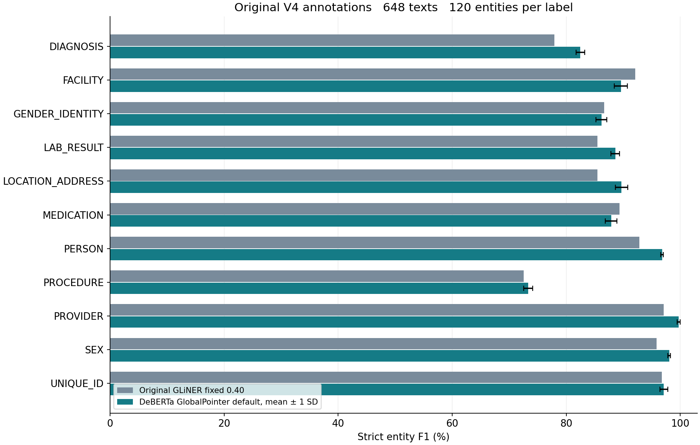
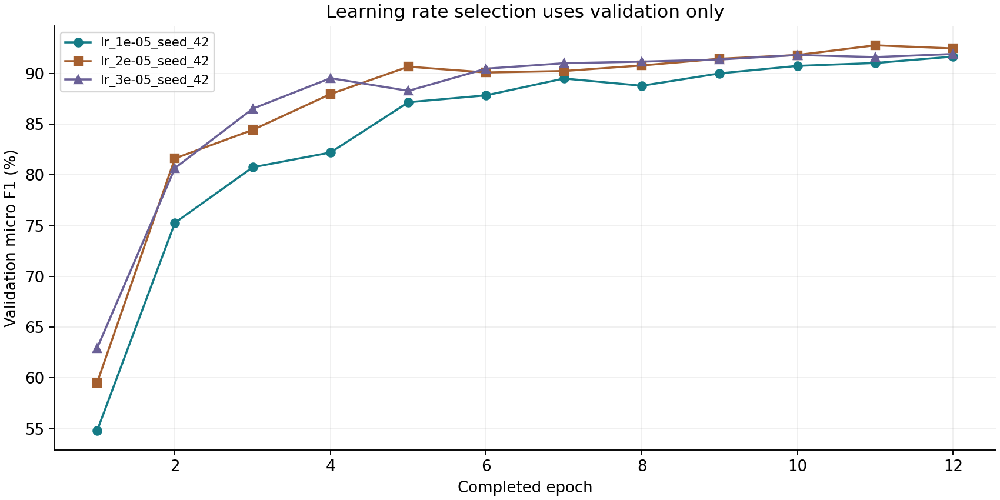

The DeBERTa GlobalPointer model achieved mean default-threshold V4 F1 90.09% across 3 seeds, a difference of +1.84 percentage points from the saved original GLiNER model. The comparison uses the original midterm annotations, not Option B.
| Model | Seed | Precision % | Recall % | F1 % | TP | FP | FN |
|---|---|---|---|---|---|---|---|
| Original GLiNER pretrained fixed 0.40 | pretrained | 47.62 | 60.61 | 53.33 | 800 | 880 | 520 |
| Original GLiNER fixed 0.40 | one saved model | 86.15 | 90.45 | 88.25 | 1194 | 192 | 126 |
| Original GLiNER validation per label | one saved model | 87.16 | 89.47 | 88.30 | 1181 | 174 | 139 |
| DeBERTa GlobalPointer default_logit_0 | 42 | 92.20 | 87.73 | 89.91 | 1158 | 98 | 162 |
| DeBERTa GlobalPointer validation_global | 42 | 92.20 | 87.73 | 89.91 | 1158 | 98 | 162 |
| DeBERTa GlobalPointer validation_per_label | 42 | 92.18 | 86.67 | 89.34 | 1144 | 97 | 176 |
| DeBERTa GlobalPointer default_logit_0 | 7 | 91.48 | 88.71 | 90.08 | 1171 | 109 | 149 |
| DeBERTa GlobalPointer validation_global | 7 | 93.41 | 86.97 | 90.07 | 1148 | 81 | 172 |
| DeBERTa GlobalPointer validation_per_label | 7 | 91.90 | 87.73 | 89.77 | 1158 | 102 | 162 |
| DeBERTa GlobalPointer default_logit_0 | 99 | 92.39 | 88.26 | 90.28 | 1165 | 96 | 155 |
| DeBERTa GlobalPointer validation_global | 99 | 92.39 | 88.26 | 90.28 | 1165 | 96 | 155 |
| DeBERTa GlobalPointer validation_per_label | 99 | 93.62 | 86.67 | 90.01 | 1144 | 78 | 176 |
| New model threshold | F1 mean % | SD pp | Seeds |
|---|---|---|---|
| default_logit_0 | 90.09 | 0.18 | 3 |
| validation_global | 90.09 | 0.18 | 3 |
| validation_per_label | 89.71 | 0.34 | 3 |
SD is sample standard deviation across new-model training seeds. The old model is one saved checkpoint; its seed variability was not rerun. Default thresholds differ by model: GLiNER probability 0.40 and GlobalPointer raw logit 0. They are not equivalent confidence scales.

| Label | Gold | Old fixed F1 % | New default mean F1 % | Change pp | Old calibrated F1 % | New calibrated mean F1 % | Change pp |
|---|---|---|---|---|---|---|---|
| DIAGNOSIS | 120 | 77.91 | 82.48 | +4.57 | 76.74 | 82.69 | +5.95 |
| FACILITY | 120 | 92.12 | 89.59 | -2.52 | 92.12 | 89.56 | -2.55 |
| GENDER_IDENTITY | 120 | 86.67 | 86.17 | -0.49 | 88.21 | 84.99 | -3.22 |
| LAB_RESULT | 120 | 85.49 | 88.60 | +3.11 | 84.52 | 88.23 | +3.71 |
| LOCATION_ADDRESS | 120 | 85.48 | 89.71 | +4.23 | 85.47 | 88.77 | +3.30 |
| MEDICATION | 120 | 89.36 | 87.88 | -1.48 | 89.74 | 85.56 | -4.19 |
| PERSON | 120 | 92.86 | 96.81 | +3.95 | 92.86 | 96.69 | +3.83 |
| PROCEDURE | 120 | 72.52 | 73.36 | +0.84 | 72.87 | 74.12 | +1.26 |
| PROVIDER | 120 | 97.12 | 99.72 | +2.60 | 97.12 | 99.58 | +2.46 |
| SEX | 120 | 95.87 | 98.06 | +2.19 | 95.87 | 97.47 | +1.60 |
| UNIQUE_ID | 120 | 96.75 | 97.12 | +0.37 | 97.14 | 97.25 | +0.10 |

The learning rate and checkpoint were selected using validation micro F1 at raw logit zero. Earliest epoch wins checkpoint ties; smaller learning rate wins sweep ties. Each selected seed uses its own validation-selected checkpoint and thresholds. No seed was selected by V4 score.
Train: 1509 texts and 3947 entities. Validation: 171 texts and 453 entities. V4: 648 texts and 1320 entities, 120 per category. Strict inclusive original-token boundaries and labels are matched within each sample, using micro averaging. Duplicate predictions count as extra false positives. Nested decoding is permitted, but these annotations contain no nested entities, so nested-subset performance is not estimable.
This is a controlled data and scoring comparison, not a matched tuning-budget or training-objective experiment. The old GLiNER checkpoint was selected in a larger historical search; the new model uses a three-learning-rate sweep. The presentation reports earlier V4 evaluations during development, so V4 is an established reused project benchmark rather than a newly untouched external test. The new experiment freezes its choices before V4 evaluation. Direct runtime comparison is unavailable because the old saved metrics do not record comparable timing; only new-model timings are reported.
User-selected midterm presentation. Exact old scores were read from the original final_model outputs, and its fixed-threshold scores were recomputed from saved predictions. Raw tables: overall_comparison.csv, per_label_comparison.csv, seed_summary.csv and learning_rate_history.csv. Error files contain original text and should remain with the project data.
Frozen protocol SHA256: 56d939f8b507c57e99fe3066b813a663cb5bc501478976c04c68ea01b0507639
V4 SHA256: ba40da69601298e626a3e748640bf1787c541b56a63871161e4e2044bda39be6